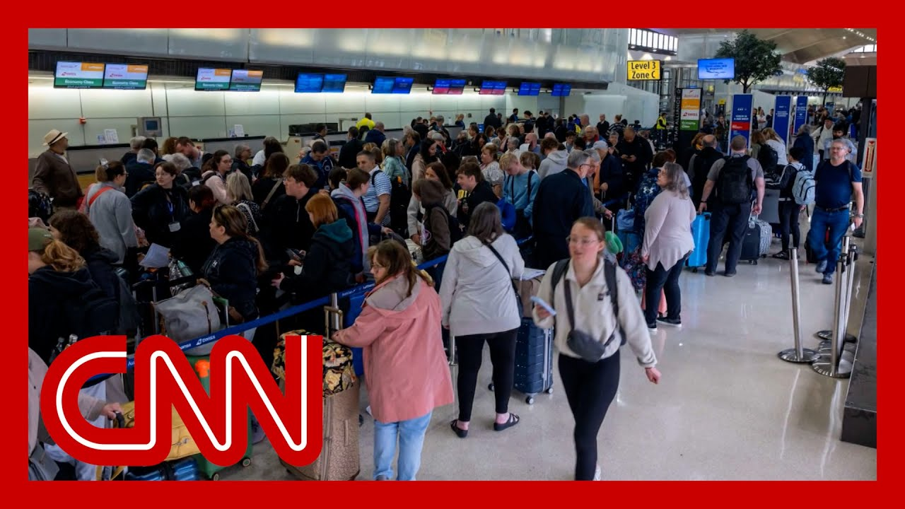

来B站一起耍【Global每日英语简报】
【纽瓦克机场因空管人员创伤休假而出现大面积延误】
Summary: Air traffic controllers at Newark Airport are on trauma leave after equipment failures, causing widespread delays and cancellations for travelers.
摘要： 纽瓦克机场空管人员因设备故障导致创伤休假，造成旅客航班大面积延误和取消。

⏱️ Estimated Reading Time: 15 min
Air traffic controllers at Newark International Airport in New Jer were, quote, traumatized after equipment failures, cut off communication with planes two weeks ago.
新泽西州纽瓦克国际机场的空管人员因设备故障而“受到创伤”，两周前与飞机的通信中断。
Now five controllers are out on paid leave, and customers in Newark are deal with another week of disastrous Seen in spring.
目前有五名空管人员带薪休假，纽瓦克的旅客正面临又一灾难性的一周延误。
Grass is on the ground at Newark Liberty International Airport, and CNN's Pete Munteanu is here with the latest.
纽瓦克自由国际机场的草地上，CNN的皮特·蒙特亚努带来最新报道。
Pete, let me start with you.
皮特，先从你开始。
You've been on top of this story Tell us exactly what you've lear why exactly these delays are hap and what in the hell is going on at Newark.
你一直在跟进此事，告诉我们你了解到的情况，这些延误的原因以及纽瓦克到底发生了什么。
Well, the FAA is now essentially confirming our reporting.
美国联邦航空管理局（FAA）现在基本证实了我们的报道。
That really paints the best picture yet of why these delays have persisted for A source familiar with an incident last Monday tells me that this all goes back to a period of time when controllers in the facility responsible for arriving and departing from Newark Liberty Internationa lost radio communications and their radar systems for an undisclosed time last Mon
一位熟悉上周一事件的消息人士告诉我，这一切源于纽瓦克自由国际机场负责起降的空管设施在某段时间内失去了无线电通信和雷达系统。
That led to five air traffic con in that radar facility to take what's called trauma lea
这导致该雷达设施的五名空管人员采取了所谓的“创伤休假”。
They are now on leave for the next 45 days, something they're legally entitl
他们现在休假45天，这是他们的合法权利。
Want you to listen now to the ne we just got from live ATC dot ne and I want you to hear the frust of the air traffic controller in this Newark facility that controls flights going in and out of Newark.
现在请听我们从liveatc.net获得的最新音频，听听纽瓦克设施中负责进出航班的空管人员的沮丧。
And he's telling a smaller plane a general aviation plane, that he does not have the abilit to see that plane on radar and to essentially go away.
他告诉一架小型通用航空飞机，他无法在雷达上看到该飞机，并基本上要求其离开。
List To we lost our radar, and it's not working correctly.
听着，我们失去了雷达，它无法正常工作。
Render service terminated for free and change approved.
服务终止，自由变更已批准。
If you want a proper clearance, you can just call the towers and get closer.
如果你需要正式的许可，可以直接联系塔台并靠近。
Okay, I'll wait for that frequen from you.
好的，我会等待你的频率。
Okay.
好的。
Okay.
好的。
No.
不。
The squawk before I look up the tower frequ
在我查找塔台频率之前，先确认应答机代码。
And we don't have a radar, so I don't know where you are.
我们没有雷达，所以我不知道你在哪里。
We also heard today from Senate Democrat Chuck Schumer, who says while the FAA has been investiga its own incident here, the Department of Transportation Office of Inspector General now has to launch a probe immediatel
我们还听到参议院民主党人查克·舒默今天表示，尽管FAA一直在调查此事，但交通部监察长办公室现在必须立即展开调查。
He says he also points back to a move by the FAA last July, in which it moved the facility responsible for Newark airspace from Long Island to Philadelphia
他还提到FAA去年7月将负责纽瓦克空域的设施从长岛迁至费城。
The whole idea there was to shor staffing shortages.
这一举措本意是缓解人员短缺。
Schumer says This, in essence, backfired.
舒默表示，这实际上适得其反。
There are some pretty big questi that people are asking about why can't controllers be drag and dropped essentially from one place to an
人们提出了一个重要问题：为什么空管人员不能简单地从一个地方调到另一个地方？
These are location specific jobs
这些是特定地点的工作。
It's not that easy.
没那么简单。
The FAA is not really detailing a fix in the near term right now
FAA目前并未详细说明近期解决方案。
Jake and Brennan, another day of major delays at Newark International Airport.
杰克和布伦南，纽瓦克国际机场又一天的大规模延误。
What are you hearing from custom
你从旅客那里听到了什么？
Yeah, Jake, let's put it this wa
是的，杰克，这么说吧。
If you have a flight in or out o that hasn't been delayed or canc go outside, buy a lottery ticket right now because that's all we're seeing on the boards.
如果你的进出航班没有延误或取消，赶紧去买彩票吧，因为屏幕上全是延误和取消。
As you look at the terminal depa were in terminal.
当你查看航站楼出发屏时。
Being on terminal A here at Newa typically has those domestic fli
纽瓦克A航站楼通常是国内航班。
But you can see delayed delayed,
但你能看到延误、延误。
It gets even worse when the screen changes terminal B where we are, like I said, a lot of international flights.
当我们切换到B航站楼时情况更糟，那里有很多国际航班。
But again some of it is open for check in hours early.
但有些航班提前几小时开放值机。
But it really is not a big surpr if you actually see that check i to delayed.
但如果你看到值机变为延误，也不会太惊讶。
It's very rare to see a flight take off of that Newark.
纽瓦克的航班很少能准时起飞。
It is that bad.
情况就是这么糟糕。
And we are now into the eighth day of these disruptions for travele
旅客们现在已经是第八天面临这些混乱了。
and people are at their wit's en
人们已经忍无可忍。
Actually, someone just walked by and says, I'm going to kill somebody there.
实际上，有人刚刚走过说：“我要杀人了。”
They're so angry.
他们非常愤怒。
That's that's what we're seeing and a lot of frustration.
这就是我们看到的情况，充满了沮丧。
Take a listen to one traveler.
听听一位旅客的说法。
Now I have to kind of requests time off, which sometimes that can turn into penalties for me because it's last minute.
现在我不得不临时请假，这有时会让我受到处罚，因为是最后一刻。
and I'm an hourly worker, so I don't get benefits.
我是小时工，没有福利。
so I can't even kind of like, compensate that lost time, like, oh, I can just use my sick hours
所以我甚至无法补偿损失的时间，比如用病假时间。
I don't have the luxury of doing
我没有这种奢侈。
Yeah, it really is the perfect storm here at Newark.
是的，纽瓦克现在真是“完美风暴”。
We are actually having low cloud cover here at the airport.
机场上空现在有低云覆盖。
It's those issues that Pete was just describing to
这就是皮特刚才描述的问题。
It's the fact that there's a runway actually closed here at Newark for renovations, and then it's just the antiquated system that this airl
事实上，纽瓦克的一条跑道因翻修关闭，再加上航空系统过时。
Airports are running on.
机场正在运行的系统。
It's a big issue, and it's really just trickling d to these travelers who have, quite frankly, had enough.
这是个重大问题，最终影响到这些已经受够了的旅客。
Jake, the union representing air traffic control is speaking out about the critic staffing shortage, shortage that's causing major problems at Newark Liberty International Airport.
杰克，代表空管人员的工会正在批评人员短缺问题，这导致纽瓦克自由国际机场出现重大问题。
For the eighth straight day, hundreds of flights have been canceled or delayed.
连续第八天，数百个航班被取消或延误。
There's a lot of delays and cancellations.
延误和取消非常多。
And now the union and a separate CNN source familiar with the situation say it is in get this because several air traffic controllers had to take a leave of absence l after equipment problems with the planes and left them traumatized.
工会和CNN的另一位消息人士表示，这是因为几名空管人员因飞机设备问题不得不休假，这让他们受到创伤。
San aviation correspondent Pete Martin joins us now.
航空记者皮特·马丁现在加入我们。
I mean, I read that earlier, Pete, and I thought, how bad did it have to be that they are at t where they are too traumatized to come to work?
皮特，我读到这个时在想，情况得多糟糕才会让他们因创伤无法工作？
This is awful a
这太糟糕了。
These new developments really paint the best picture ye we've had these eight days of de for flights going into and out o
这些新进展最清楚地解释了八天来进出航班的延误。
Here is the latest.
这是最新情况。
This all goes back to an inciden last Monday at the key radar facility, responsible for departing and approaching Newark
这一切源于上周一在负责纽瓦克起降的关键雷达设施发生的事件。
And a source familiar with that incident tells me that controllers there lost both radio communications and the picture on their radar s for an undisclosed time, meaning those controllers were essentially trying to do their jobs blind.
一位熟悉该事件的消息人士告诉我，那里的空管人员在某段时间内失去了无线电通信和雷达图像，意味着他们基本上是在“盲操作”。
They call it Nordhoff no Radio, which led to at least five contr taking what's called trauma leav which they're legally allowed to
他们称之为“无无线电诺德霍夫”，导致至少五名空管人员采取“创伤休假”，这是他们的合法权利。
They're now off for the next 45
他们现在休假45天。
This is a huge development, and we know that the FAA has been investigating the cause of the equipment outage that triggered the staffing shor
这是一个重大进展，我们知道FAA一直在调查导致人员短缺的设备故障原因。
Just last week, the FAA acting chief told me a team has been on the ground to figure out the nature of that equipment problem.
就在上周，FAA代理局长告诉我，一个团队已到场调查设备问题的性质。
But now Senate Democrat Chuck Sc is calling for the Department of Transportation inspector general to launch a probe immediately.
但现在参议院民主党人查克·舒默呼吁交通部监察长立即展开调查。
This is what he said about the outage at that Newark radar facility.
这是他对纽瓦克雷达设施故障的评论。
He says the equipment there is aging and it must be fixed yesterday.
他说那里的设备老化，必须尽快修复。
The technology is old and must be updated.
技术陈旧，必须更新。
It was one of the things that one of the things that happened at N is a copper wire burnt.
在纽瓦克发生的事情之一是铜线烧毁。
Why are we using copper wire in
为什么我们还在用铜线？
Have they heard of fiber?
他们没听说过光纤吗？
That soundbite is a heater and he flew it right over the pl
这段发言很激烈，他直接抛出了问题。
A copper wire, he says, is the cause of this is
他说铜线是导致这一问题的原因。
Initially, Schumer also called out the FAA's move of that Newark radar facility from Long Island, New York, to Philadelphia.
最初，舒默还批评FAA将纽瓦克雷达设施从纽约长岛迁至费城。
The FAA did that last July in hopes of enticing new hires and shoring up its staffing problem, Schumer says.
舒默表示，FAA去年7月这样做是为了吸引新员工并解决人员短缺问题。
It's actually made problems wors
实际上这让问题更糟。
Newark is really emblematic, though, of the air traffic contr staffing problems nationwide, and the Union of Air Traffic Controllers says they're still 3000 controll short nationwide.
纽瓦克是全国空管人员短缺的缩影，空管员工会表示全国仍短缺3000名空管人员。
They're also clarifying this one
他们还澄清了一点。
Last Friday, United Airlines CEO Scott Kirby sent out a memo to passeng in which he said that controller walked off the job.
上周五，美联航CEO斯科特·柯比向乘客发送备忘录，称空管人员“离岗”。
That union says it's unfair because controllers were traumat and they took this leave once again, something that they're legally allowed to do.
工会表示这不公平，因为空管人员受到创伤，他们只是行使合法休假权利。
Wow, that is a lot.
哇，信息量很大。
I'm. So I have to say, honestly, are you processing all of it?
说实话，你在消化所有这些吗？
we did also want to ask you abou
我们还想问你关于。
there's some new reporting you have about the Army pausing helicopter flights here
你有一些关于陆军暂停直升机飞行的新报道。
The big thing here is this all stems back to an incident last Thursda
这一切源于上周四的事件。
It was about 230 in the afternoo when planes were coming in to Reagan National Airport.
大约下午2:30，飞机正飞往里根国家机场。
And this helicopter from the same army battalion that was involved in that midair collision back on January 29th, was arriving at the Pentagon not too far away.
而这架来自1月29日空中相撞事件同一陆军营的直升机正飞往不远处的五角大楼。
We're talking as the crow flies, maybe a half mile, maybe
直线距离可能只有半英里。
And so the controller in the tow at Reagan National Airport told these flights to go around, because that controller feared that these airplanes and helicop were ultimately getting too close to one another.
里根国家机场的塔台空管人员让这些飞机绕行，因为他担心飞机和直升机距离过近。
Nobody heard in this.
没有人听到。
Those planes came back around and did successful landings.
这些飞机绕行后成功降落。
There's been a bit of a scuttleb about why the helicopter was the
关于直升机为何出现在那里有些争议。
if it was supposed to be, flying around the Pentagon, if they were taking the scenic r
它是否应该在五角大楼周围飞行，是否在“观光”。
That's what the FAA initially sa
这是FAA最初的说法。
Or if they were actually not actually cleared to land at the Pentagon and told to go around once thems
或者他们实际上未被批准降落在五角大楼并被要求绕行。
So now the big development here is that the Army says it is suspending flights by the 12th Aviation Battalion around the Pentagon and around Reagan National Airpo
现在的最新进展是，陆军表示将暂停第12航空营在五角大楼和里根国家机场周围的飞行。
This is essentially a huge admission here.
这实际上是一个重大承认。
And the Army's now trying to backpedal to make it so that this does not come off badly on them.
陆军现在试图挽回形象，避免负面影响。
There's been a lot of scrutiny about helicopter flights in the DC area since that crash.
自那次碰撞以来，华盛顿特区的直升机飞行受到严格审查。
Yeah.
是的。
Wow.
哇。
Okay.
好的。
Thank you.
谢谢。